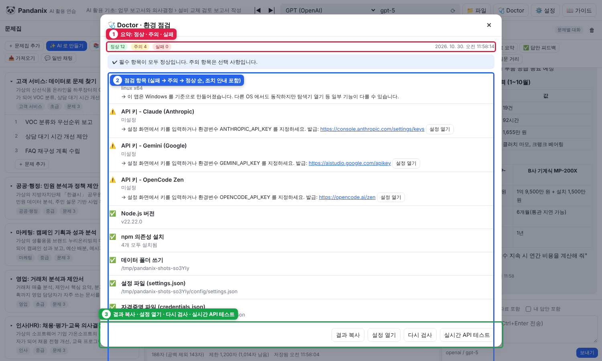

8. Doctor (환경 점검)
실행이 안 되거나 AI 가 응답하지 않을 때 원인을 자동으로 찾아 주는 기능입니다.
실행 방법
| 방법 | 설명 |
|---|---|
| 앱 안 🩺 Doctor 버튼 | 결과를 화면에 표시. 실시간 API 테스트 로 실제 연결까지 확인 |
doctor.bat | 서버를 띄우지 않고 터미널에서 점검 |
doctor.bat --live / npm run doctor:live | API 연결 테스트 포함 |
node server/doctor-cli.js --json | JSON 출력 (스크립트용) |

① 요약 ② 점검 항목(실패 → 주의 → 정상 순, 조치 안내와 설정 열기 버튼) ③ 결과 복사 · 설정 열기 · 다시 검사 · 실시간 API 테스트
점검 항목
| 항목 | 실패 시 조치 |
|---|---|
| Node.js 버전 ≥ 22 | nodejs.org 에서 LTS 설치 |
| 운영체제 | Windows 가 아니면 주의(동작은 함) |
| npm 의존성 | npm install |
| 데이터 폴더 쓰기 | 폴더 권한 확인 또는 PANDANIX_DATA_DIR 변경 |
| settings.json / credentials.json | JSON 문법 오류면 파일 수정 또는 삭제 후 재시작(자동 재생성) |
| API 키 git 제외 | .gitignore 확인 |
| API 키 (프로바이더별) | 기본 프로바이더 키가 없으면 ❌, 나머지는 ⚠ (사용자 정의는 선택) |
| AI 사용 가능 여부 | 키가 하나도 없으면 ❌ → 최소 1개 입력 |
| 기본 프로바이더/모델 | 설정 > 기본 모델 |
| 파일 접근 허용 폴더 | 없는 폴더는 설정에서 제거 |
| 포트 | 이미 사용 중이면 기존 서버 사용 또는 포트 변경 |
| 문제집 데이터 | 손상된 workbook.json 수정/삭제 |
| 연결 테스트 (live) | 키·Base URL·프록시/방화벽 확인 |
결과 공유
결과 복사 버튼은 점검 결과를 텍스트로 복사합니다. 담당자나 AI 에게 붙여 넣으면 빠르게 진단할 수 있습니다.
종료 코드 (CLI)
실패 항목이 하나라도 있으면 1, 아니면 0. 배치 스크립트에서 사전 점검용으로 쓸 수 있습니다. 키를 넣지 않은 개발 환경에서는 "API 키 - 기본" 실패 1건 때문에 1 로 끝나는 것이 정상입니다.